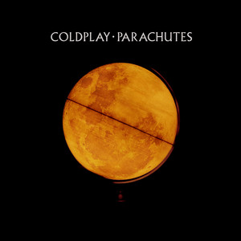

Coldplay
Amor do céu… dá pra acreditar que hoje, exatamente no dia 4, completamos 1 ano do nosso recomeço?! Bom, eu particularmente ainda não estou acreditando KKKKK. Passou tão rápido… parece que foi ontem que eu te mandei aquela mensagem e nos encontramos no ônibus depois de sair da escola. Mal sabia eu que, a partir daquele dia, começaríamos a história de amor mais linda possível.
Falando assim até parece bobeira… porque, nesses últimos meses, passamos por coisas difíceis, uma fase ruim. Brigamos bastante, tivemos muitos desentendimentos, e às vezes tudo parecia desgastante. Mas é exatamente isso que torna o nosso relacionamento tão lindo e incrível. Sabe por quê? Porque, mesmo com tudo isso acontecendo, nós nunca, em hipótese alguma, pensamos em desistir um do outro. Muito pelo contrário: decidimos nos unir e enfrentar tudo juntos. Por mais doloroso que tenha sido, nunca soltamos a mão um do outro.
Sabe… vou ser bem sincero. Eu realmente não tinha esperanças de que voltaríamos. De verdade, eu achava que era impossível. Até que a gente se reencontrou… meu Deus, como eu sou feliz por isso! Desde o nosso recomeço, venho sendo outra pessoa. Uma pessoa que eu não era. Mas você entendeu o meu lado, e mesmo diante dos meus erros (muitos deles te machucaram como facadas), você não virou as costas pra mim. Você apenas enxugou as minhas lágrimas e me passou segurança. Ninguém nunca fez isso por mim. Por isso é tão estranho, no melhor sentido possível. Porque eu me sinto cuidado… e ao mesmo tempo, quero cuidar de você também. Isso é incrível!
Ninguém nunca me fez sentir tão seguro quanto eu me sinto quando estou nos seus braços, sentindo seu perfume, olhando nos seus olhos encantadores.Me desculpa, amor… de verdade, me desculpa por todos os erros que cometi nesse ano que passou. Você talvez nem saiba, mas eu me arrependo tanto que chega a doer no peito cada lágrima que fiz escorrer dos seus olhos. Mas, diante de tantas chances e perdões, eu me sinto cada vez mais motivado a ser uma pessoa melhor pra você. Mesmo falhando às vezes, você sabe que o meu amor por você vai muito além de tudo que você sequer imagina. Nem mil Bíblias teriam palavras pra descrever o tamanho do meu amor inefável por você.
Já te disse muitas vezes, mas vou repetir, porque nunca é demais: Carolline Veiga Mestre… VOCÊ É O AMOR DA MINHA VIDA! Eu nunca vou me cansar de dizer isso, porque é a mais pura verdade! Eu te amo como o sol ama a lua, como o Luffy ama carne KKKKK. Nem sei o que comparar, porque meu amor por você ultrapassa tudo. Às vezes eu sinto que você nem é real… parece uma divindade. Você é tão linda, a garota mais linda que eu já vi. Tem uma luz, uma paz, um sorriso que encanta qualquer um.
Eu já fiz tantos planos pro nosso futuro… que sei que, se um dia eu te perder, vou perder meu propósito também. Por isso, quero te fazer a garota mais feliz desse mundo, pra que você nunca pense em me deixar, tá bom???
Minha nenezinha… você é tudo o que eu sempre quis na vida. Tenho tanto medo de te perder. Você cuida tão bem de mim, que tem dias em que eu só desejo isso: ficar no seu colinho, ou no meu “pepeto”, o dia todo. Quero que saiba que eu sempre, SEMPRE, serei seu neném, mozinho!
Obrigado, amor.
Obrigado por ter aceitado recomeçar essa linda história de amor comigo.
Obrigado por me fazer o garoto mais feliz do mundo.>
Obrigado por ser você.
Obrigado por tudo. Eu te amo incondicionalmente. Nunca se esqueça disso!Se lembra desse vídeo?? La de 2022... Onde tudo começou! Onde eu encontrei o amor da minha vida.
Calculando...
Calculando...
Espero que você tenha gostado dessa homenagem feita pra você, meu bem. Uni as duas coisas que mais amo: você (em primeiro lugar, óbvio KKKKK) e a programação. Quebrei a cabeça pra fazer… então GOSTE, PFV 😿😿.